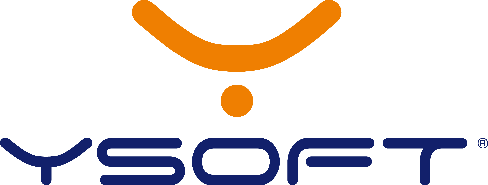

-
-
Predikce vítěze VZ
- predikce
- datamining
- opendata
Stále více ministerstev a státních orgánů zveřejňuje informace o svém hospodaření. Tato data jsou však roztříštěná a nevhodná k dalším analýzám. Ukázky lze nalézt např. zde.
Firma Profinit v minulém semestru prostřednictvím SSP zadala studentskou práci na extrakci a konsolidaci těchto dat, práce byla úspěšná a tak nyní chceme data vytěžit a identifikovat v nich vybrané důležité příznaky. Pokud byste měli nápad, co ještě s daty dělat, ozvěte se na marek.susicky@profinit.eu.
Související předměty:
- MI-ADM - Algoritmy data miningu
- BI-VZD - Vytěžování znalostí z dat
-
Rozdělení dodavatelů VZ
- datamining
- opendata
Stále více ministerstev a státních orgánů zveřejňuje informace o svém hospodaření. Tato data jsou však roztříštěná a nevhodná k dalším analýzám. Ukázky lze nalézt např. zde.
Firma Profinit v minulém semestru prostřednictvím SSP zadala studentskou práci na extrakci a konsolidaci těchto dat, práce byla úspěšná a tak nyní chceme data vytěžit a identifikovat v nich vybrané důležité příznaky. Pokud byste měli nápad, co ještě s daty dělat, ozvěte se na marek.susicky@profinit.eu.
Související předměty:
- MI-ADM - Algoritmy data miningu
- BI-VZD - Vytěžování znalostí z dat
-
Clustering faktur
- datamining
- opendata
Stále více ministerstev a státních orgánů zveřejňuje informace o svém hospodaření. Tato data jsou však roztříštěná a nevhodná k dalším analýzám. Ukázky lze nalézt např. zde.
Firma Profinit v minulém semestru prostřednictvím SSP zadala studentskou práci na extrakci a konsolidaci těchto dat, práce byla úspěšná a tak nyní chceme data vytěžit a identifikovat v nich vybrané důležité příznaky. Pokud byste měli nápad, co ještě s daty dělat, ozvěte se na marek.susicky@profinit.eu.
Související předměty:
- MI-ADM - Algoritmy data miningu
- BI-VZD - Vytěžování znalostí z dat
-
Datový model DWH pro e-shop podle Data Vault
- datové modelování
Datové sklady nejsou mrtvé. Naopak, zdá se, že budou stale dostupnější i pro menší společnosti. Jedním z trendů je automatizace jejich vývoje a provozu, která je úzce svázána s metodikou datového modelování nazývanou Data Vault.
Profinit se dlouhodobě věnuje budování datových skladů, jejichž jádrem je kvalitní datový model. Zkuste poměřit svoje schopnosti a navrhněte svůj datový model pro DWH.
Související předměty:
- MI-ADM - Algoritmy data miningu
- BI-VZD - Vytěžování znalostí z dat
-
Detekce pravidelných dodavatelů ministerstev
- datamining
- opendata
Stále více ministerstev a státních orgánů zveřejňuje informace o svém hospodaření. Tato data jsou však roztříštěná a nevhodná k dalším analýzám. Ukázky lze nalézt např. zde.
Firma Profinit v minulém semestru prostřednictvím SSP zadala studentskou práci na extrakci a konsolidaci těchto dat, práce byla úspěšná a tak nyní chceme data vytěžit a identifikovat v nich vybrané důležité příznaky. Pokud byste měli nápad, co ještě s daty dělat, ozvěte se na marek.susicky@profinit.eu.
Související předměty:
- MI-ADM - Algoritmy data miningu
- BI-VZD - Vytěžování znalostí z dat
-
Awkldr
- java
Program awkldr je multiplatformní utilita příkazového řádku pro extrakci a import dat z rozličně strukturovaných textových souborů do sql databází. Možnosti parsování textových souborů vychází z principů jazyka textových transformací awk.
Cílem projektu je poskytnout uživateli flexibilní a snadno použitelný nástroj pro import nestrukturovaných dat do běžně používaných open source i komerčních databází.
Související předměty:
- BI-PJV - Programování v Javě
-
Plugin pro open source nástroj Liquibase
- java
Liquibase je jeden z nejvíce používaných nástrojů pro verzování a migraci databázových řešení.
Nástroj podporuje všechny hlavní databázové stroje, disponuje aktivní komunitou vývojářů a splňuje všechny předpoklady pro zajištění principu Countinuous Delivery na projektu.
Seznamte se s tímto nástrojem a rozšiřte ho o další funkcionality, které mohou využít další z mnoha uživatelů, kteří s Liquibase pracují.
V případě dotazů kontaktujte michal.petrik@profinit.eu.
-
Extrakce metadat datového modelu
- java
- databáze
- XML
Velmi často se architekt/designér/vývojář setká s potřebou reverse engineeringu stávajícího datového modelu.
Pro tuto činnost je silná podpora v grafických nástrojích, avšak občas je nutné tyto informace zjistit dávkově.
V případě dotazů kontaktujte michal.petrik@profinit.eu.
-
Návrh a realizace JDBC proxy driveru
- java
- databáze
Ve složitějších DB architekturách dochází k situacím, kdy jsou jednotlivé úlohy distribuovány přes více databází/tabulek.
Pro zjednodušení a možnost automatizace se jako vhodné řešení nabízí proxy driver, který zajistí správné směrování požadavků.
Vyzkoušejte si práci s rozhraním JDBC a napište svůj vlastní ovladač, který pak může používat každý, kdo bude podobnou úlohu řešit.
V případě dotazů kontaktujte michal.petrik@profinit.eu.
-
Aplikace pro podporu tvorby odhadů SW
- AngularJS
- databáze
- Web Apps
Tvorba softwarových odhadů je velmi často nazývána magií, a to na základě mnohých zkušeností.
Profinit za dobu své existence na základě svých poznatků vyvinul metodiku pro tvorbu odhadů, která je shrnuta zde.
Pojďme nám pomoci tuto metodiku otevřít i dalším uživatelům formou webové aplikace, která bude v základu kopírovat funkcionalitu současné implementace v tabulce MS Excel, umožní však lepší sdílení dat a jejich uchovávání.
V případě dotazů kontaktujte michal.petrik@profinit.eu.
-
Big data pro realitní společnost
- ekonomika
- IT Business Analysis
Je mnoho oborů, které jsou “jako stvořené” pro nasazení datově analytických řešení. Realitní služby jsou podle nás jedním z nich. Zkuste sami přijít na takové využití “velkých dat”, které by zajistilo realitní kanceláři náskok před konkurencí.
Pro realitní společnost (případně jiný podobný business) navrhněte vhodnou datově analytickou úlohu, kombinující interní data (CRM, DWH apod.) s dostupnými tržními daty z realitního trhu a daty z veřejného internetového prostoru (např. ale nejen sociální sítě), jejiž aplikací by daná společnost získala obchodně využitelnou ekonomickou výhodu.
-
-
-
Optimization of distinct aggregation in PostgreSQL
PostgreSQL cannot to use indexes or hash for aggregation over distinct values. Currently only sort based solution is provided. There are some workaround, but we need built-in solution.
Describe this issue, why distinct aggregation is necessary. Describe possible implementations and write a patch for Postgresql planner and executor.
We expecting a final report with analyses of performance old and new implementation of distinct aggregates. All PostgreSQL regress tests should pass.
-
-
-
Simplified test double aware mocking framework
These days, all the commonly used mocking frameworks support mocking, but they do not explicitly define the differences between test doubles. The goal of this assignment is to design and implement simplified test double aware mocking framework.
Analyze the current state of mocking frameworks used in Java projects. Choose the syntax, compare current solutions and design the mocking API. Implement the support for dummy objects, test stubs and mock objects (or test spies) and related functionality.
Související předměty:
- MI-MPR - Magisterský projekt
- MI-DIP - Magisterská práce
- BI-PJV - Programování v Javě
-
-
-
Vývoj reporting aplikačního serveru – DocPrintReports
Mezi jednu z nejlepších komponent na .NET reporting patří produkt s názvem Fast Reports. Společnost, která tuto komponentu vyvíjí, již aktuálně nepodporuje řešení (Fast Reports Server), které by umožňovalo Fast Reports komponentu provozovat jako aplikační server.
Současně na trhu neexistuje žádná společnost nebo komunita, která by tento aplikační server nabízela.
Takovéto „krabicové“ řešení ocení každý, kdo potřebuje generovat nebo tisknout dokumenty ze šablon, do kterých je potřeba vkládat dynamické hodnoty, obchodní logiku a zároveň řešení se bude pře používat i v ostatních systémech – tzn., bude splňovat SOA architekturu.
Související předměty:
- BI-SI1 - Softwarové inženýrství I
- BI-SP1 - Softwarový týmový projekt 1
-
Vývoj SW nástroje pro správu a evidenci dávek aplikační podpory na bázi Atlassian Confluence
Team aplikační podpory řešící provozní incidenty na systému v prostředí zákazníka bez přímého přístupu musí pro jednotlivé případy vytvářet standardizované balíčky – dávky – přesně dle specifikace zákazníka.
Takové dávky mohou obsahovat drobné úkony jako:
- Modifikace nebo aktualizace dat relační DB.
- Aktualizace podporované aplikace nebo jejích komponent.
- Nápravy datových nekonzistencí nebo jiných provozních incidentů
- Atd.Dávky jsou po vytvoření, otestování a kontrole úplnosti předány zákazníkovi. Jeho administrační podpora zajistí spuštění na požadovaných prostředích a zpět předá výsledek běhu – jeden či více log souborů.
Kromě evidence jednotlivých dávek vzniká současně i znalostní databáze obsahující postupy a řešení nejběžnějších incidentů.
Související předměty:
- BI-SI1 - Softwarové inženýrství I
-
Projekt reimplementace GUI klientů systému Phoenix
- AngularJS
- GUI
- html5
Chceme provést reimplementaci tenkého javového klienta, který je GUI aplikací našeho provisioningového systému Phoenix do HTML5.
Vytvořit novou verzi GUI klientů systému Phoenix jakožto Webovou aplikaci.
Předpokládáme použití následujících technologií:
● HTML5
● Angular 2.0 , případně jiný podobný framework, nebráníme se novým technologiím.
● PiXi.js, Raphaeljs
● JBoss ASPožadované výstupy:
● Spolupráce při tvorbě architektury nového řešení
● Vývoj nových klientů
● Integrační-UAT testy
-
-
DATAMOLE
-
Data Mining Visualisation: Association Rules
- datamining
- javaScript
- visualization
- D3js
Association rules are most known for analysis of shopping baskets in eshops. However, there are many other applications where this technique is useful. In general as an output of association rules mining you get a set of antecedents (events, items, …) that, if appear together, have some consequence (single or a set), ie. you get implication “antecedents => consequents”. Usually you get many rules. To extract the useful ones one can use several measures of quality, such as support, confidence, lift, etc. However, it is usually a nontrivial combination of these measures, particular combinations of antecedents and / or concrete consequences.
The goal of this project is to implement visualisation techniques that help to find interesting association rules. Many of these techniques are described in literature or already implemented in machine learning tools. We aim to implement them in D3 and JavaScript.
Deep experience of machine learning is not essential. We look for machine learning enthusiasts, that are passionate to work on interesting project.
Do not hesitate to contact us in case of any question.
Související předměty:
- MI-ADM - Algoritmy data miningu
- BI-VZD - Vytěžování znalostí z dat
-
Data Mining: Sequential Rule Mining
- datamining
- machine learning
- spark
- big data
The association rules are most known for analysis of shopping baskets in eshops. The sequential association rule mining is an adaptation of association rule mining for sequential data. Sequential rules can be used if the order of actions or events is important.
The goal of this project is to implement sequential rule mining algorithms on top of Apache Spark (parallel processing engine) and demonstrate it on real data set (will be supplied).
Deep experience of machine learning and Apache Spark is not essential. We look for data mining enthusiasts, that are passionate to work on interesting projects. Our specialists are prepared to assist and supervise you throughout the assignment.
Do not hesitate to contact us in case of any question.
Související předměty:
- MI-MVI - Metody výpočetní inteligence
- MI-ADM - Algoritmy data miningu
- BI-VZD - Vytěžování znalostí z dat
-
-
FIEDLER
-
Web, Android, RaspPi - Mgr. a Bc. práce
- PHP
- Symfony
- Wordpress
- Drupal
- Joomla
- Javascript
- jQuery
- AngularJS
- Flux
- Aurelia
- Bootstrap
- Android
- vmWare
- Bash
- Python
- Puppet
- SQL
- jazyk C
- Arduino
- Raspberry Pi a vývoj HW
Nabízíme zadání magisterský a bakalářských prací. Zabýváme se vývojem chytrých aplikací. Hledáme studenty i absolventy z jižních Čech, kteří by se rádi naučili nebo se zdokonalili v používání některých z následujících technologií:
- ● PHP, Symfony, Wordpress, Drupal, Joomla, Javascript, jQuery, AngularJS, Flux, Aurelia, Bootstrap
- ● Android
- ● vmWare, Bash, Python, Puppet, SQL
- ● jazyk C, Arduino, Raspberry Pi a vývoj HW
-
Web, Android, RaspPi - Mgr. a Bc. práce
- AngularJS
- GUI
- html5
Chceme provést reimplementaci tenkého javového klienta, který je GUI aplikací našeho provisioningového systému Phoenix do HTML5.
Vytvořit novou verzi GUI klientů systému Phoenix jakožto Webovou aplikaci. Předpokládáme použití následujících technologií
- ● HTML5
- ● Angular 2.0 , případně jiný podobný framework, nebráníme se novým technologiím.
- ● PiXi.js, Raphaeljs
- ● JBoss AS
-
-
 -
SCRUM Gamification
Map existing solutions for gamified SCRUM / agile environment. Design a new gamified system for Y Soft RnD environment.
Y Soft R&D is in Brno and Prague. This project comes from R&D in Prague. Personal consultations are possible.
The project can be realized as a bachelor/master thesis.
The amount of the reward is a subject of agreement.
-
Robot Framework plugin for Atlassian Bamboo
Create a plugin for Atlassian Bamboo (a CI tool similar to Jenkins) that parses, analyzes and reports test results produced by Robot Framework.
-
-
-
Sestavení retro herního automatu s Raspberry Pi
- RaspberryPi
- arcade games
Pokud tě baví staré arcade hry a rád si hraješ s elektronikou, je to ideální zadání pro tebe. Cílem je sestavit retro herní automat s arcade hrami s pomocí Raspberry Pi. Datalab zaplatí všechny výdaje. Můžeš si vybrat jestli budeš chtít stipendium v hotovosti, nebo sestavíš dva automaty a jeden si necháš.
-
Raspberry Pi Spark Cluster
- RaspberryPi
- Computational cluster
- Apache Spark
Raspberry Pi je jednočipový počítač vyvinutý pro výukové účely. Dnes má Raspberry řadu alternativ, například ODROID, Banana Pi, Nano PC. Primárním operačním systémem těchto počítačů je Linux a není problém na nich rozchodit Debian, Ubuntu, Android, ARCHLinux… Apache Spark je obecný open-source engine pro paralelní zpracování a výpočty. Cílem je sestavit cluster z jednočipových počítačů a zprovoznit na něm Apache Spark. Datalab poskytne vedení projektu a pokryje veškeré náklady na HW.
-
-
RaRe Consulting
-
Distributed computing for word2vec
- open-source
- Python
- neural networks
- nlp
Word2Vec is a continous word representation technique for creating word vectors to capture the syntax and semantics of words. The vectors used to represent the words have many interesting features, for example `king−man+woman=queen`.
Modern data mining relies on high-level distributed frameworks like Hadoop, Spark, Celery, Disco, Samza and Ibis.
While there are implementations of distributed word2vec in Scala over Spark and in other languages, there is no established distributed computing framework that contains a word2vec implementation in Python. You will contribute a scalable implementation of distributed word2vec to the data science world in Python, building on top of one of the existing distributed frameworks. A quality implementation will be widely used in the industry.
Související předměty:
- MI-PDD - Předzpracování dat
- MI-MPR - Magisterský projekt
- MI-ADM - Algoritmy data miningu
-
Speed up of Latent Dirichlet Allocation
- algoritmy
- Python
- machine learning
- cython
Latent Dirichet Allocation (LDA) is a very popular algorithm for topic modelling. Gensim open-source package contains a well-tested multi-threaded implementation in Python.
This project will improve performance of the algorithm and test it on a variety of text datasets.
You will get familiar with practical running and analysing results of LDA as it is done in the industry.
Související předměty:
- MI-PDD - Předzpracování dat
- MI-ADM - Algoritmy data miningu
- BI-VZD - Vytěžování znalostí z dat
-
Supervised Latent Dirichlet Allocation
- machine learning
- Python
- open-source
- NLP
- GIT
- topic modeling
Supervised Latent Dirichlet Allocation (sLDA) is a Natural Language Processing method based on Latent Dirichlet Allocation (LDA). It is used in predicting the number of "Likes" for a post or the number of stars in a movie review.
In the vanilla LDA we treat the topic proportions for a text document as a draw from a Dirichlet distribution. We obtain the words in the document by repeatedly choosing a topic assignment from those proportions, then drawing a word from the corresponding topic. In Supervised Latent Dirichlet Allocation (sLDA), we add our target variable to the LDA model. For example, the number of stars assigned in a movie review or number of "Likes" of a post.
While academic implementations of sLDA exist in C++ and R, there is no Python implementation available. You will contribute a scalable implementation of sLDA to the Python data science world. A quality implementation will be widely used in the industry.
Související předměty:
- MI-PDD - Předzpracování dat
- MI-MPR - Magisterský projekt
- MI-ADM - Algoritmy data miningu
-
Topic coherence
- machine learning
- Python
- open-source
- NLP
- GIT
- topic modeling
Unsupervised learning methods like Latent Dirichlet Allocation and Latent Semantic Analysis are attractive methods to bring structure to otherwise unstructured text data. However they give no guarantees on the interpretability of their output by humans. This interpretability can be measured by topic coherence. A good model must have high topic coherence, i.e. be understandable by humans.
The "Agile Knowledge Engineering and Semantic Web (AKSW)" research group of Michael Röder recently found a topic coherence measure that outperforms others.
While they released an implementation in Java, no Python implementation in Python exists.
You will contribute a scalable implementation of AKSW Topic Coherence to the Python data science world. A quality implementation will be widely used in the industry.
Související předměty:
- MI-PDD - Předzpracování dat
- MI-MPR - Magisterský projekt
- MI-ADM - Algoritmy data miningu
- BI-VZD - Vytěžování znalostí z dat
-
Dynamic Topic Models
- machine learning
- Python
- open-source
- NLP
- GIT
- topic modeling
Dynamic topic models are used to analyze the evolution of topics of a collection of documents over time. For example, by analyzing the famous academic journal "Science" over last 120 years one can see the evolution of Atomic Physics. This topic gradually drops the word "matter" and picks up "quantum".
This family of models was proposed by David Blei and John Lafferty. It is an extension to Latent Dirichlet Allocation (LDA) that can handle sequential documents.
While there is an academic implementation in C++, no practical implementation exists. You will contribute a scalable implementation of DTM to the Python data science world. A quality implementation will be widely used in the industry.
Související předměty:
- MI-PAP - Paralelní architektury počítačů
- MI-MPR - Magisterský projekt
- MI-ADM - Algoritmy data miningu
- BI-EIA - Efektivní implementace algoritmů
-
Distributed computing for Latent Dirichlet Allocation
- machine learning
- Python
- open-source
- NLP
- GIT
- topic modeling
- spark
- map reduce
Latent Dirichlet Allocation (LDA) is a very popular algorithm for modelling topics of text documents.
Modern data mining relies on high-level distributed frameworks like Hadoop, Spark, Celery, Disco, Samza and Ibis.
While there are implementations of distributed LDA in Scala over Spark and in other languages, there is no established distributed computing framework that contains an LDA implementation in Python. You will contribute a scalable implementation of distributed LDA to the data science world in Python, building on top of one of the existing distributed frameworks. A quality implementation will be widely used in the industry.
Související předměty:
- MI-PDD - Předzpracování dat
- MI-MPR - Magisterský projekt
- MI-ADM - Algoritmy data miningu
-
Online non-negative matrix factorization
- machine learning
- Python
- Collaborative filtering
Non-negative matrix facorization, NNMF, is a popular machine learning algorithm, widely used in collaborative filtering and natural language processing.
While implementations of NNMF in Python exist, they only work on small datasets that fit fully into RAM, which is too restrictive for many real-world applications.
You will contribute a scalable implementation of NNMF to the Python data science world. A quality implementation will be widely used in the industry.
Související předměty:
- MI-PDD - Předzpracování dat
- MI-MPR - Magisterský projekt
- MI-ADM - Algoritmy data miningu
-
-
SOFTIM.CZ
-
Synchronizaci dat z dostupných API a jejich parametrické vykreslování do grafů
- databáze
- JavaScript
- C#
- webové služby
Načíst data a ztransformovat je, synchronizovat do DB v předem definované podobě, a poté je vhodně a parametricky vizualizovat.
Úkol se skládá ze tří částí:
1. Napojení na externí dostupné API s kurzy měn a ISO států
- rešerše dostupných API
- samotná realizace
2. Synchronizace dat z API s vlastní DB
3. Vykreslovat data s kurzy měn pomocí js grafů (parametricky)
- rešerše JS knihoven
- samotná realizace
Cílem je synchronizovat data z veřejně dostupných API s DB a poté je vhodně parametricky vizualizovat pomocí js grafových knihoven.
Související předměty:
-
-
-
Prague events list - web scraping
- data mining
- Database
- Text mining
- web mining
There is no comprehensive source of Prague events.
The goal of this project is to create a comprehensive source of Prague cultural events by integrating various sources.
In follow up projects, you can deal with text and mining - event categorization, event recommendation etc.
The end result that we are looking for is a calendar of events for six to eight weeks prior to the event happening.
Implement an application that scrapes web daily and generates a list of events stored in a database. The list can be later presented on web or exported to a csv file.
The information fields that we are looking for (which would be scraped) would be:
- Date of the event
- Event
- Venue of the event
- Address of Venue (we can hand insert this if needed)
- Synopsis of the event if available (we will rewrite this)
- A hyperlink address for web purposes on how to purchase ticketsSouvisející předměty:
- BI-SI1 - Softwarové inženýrství I
- MI-PDD - Předzpracování dat
- MI-DDW - Dolování dat z webu
-